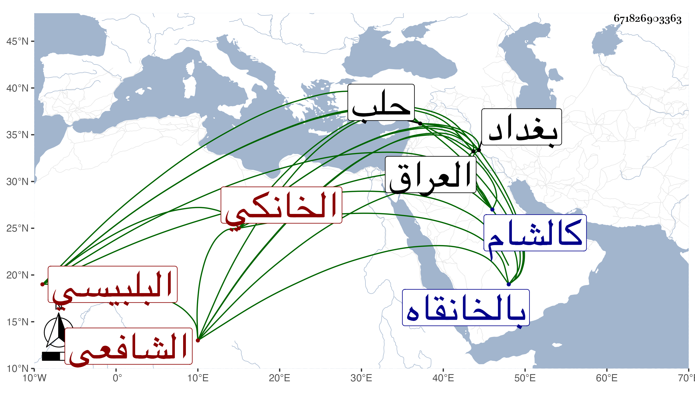

0902Sakhawi.DawLamic.ITO20230111-ara1.EIS1600.671826903363
Biography ID: 671826903363
561
محمد أبو الخير البلبيسي الأصل الخانكي الشافعي ويعرف بابن التاجر أخو الذي قبله وهو بكنيته أشهر . ولد سنة ست وثلاثين وثمانمائة بالخانقاه ونشأ بها فحفظ القرآن والمنهاج وغيره ، وعرض على جماعة واشتغل عند النور البوشي ثم ارتحل وأخذ عن المحلي والمناوي والوروري والتقي والعلاء الحصنيين والتقي الشمني وتميز وأقرأ الطلبة واستقر في تدريس الخانقاه عوضا عن الونائي وحج غير مرة ودخل بغداد والعراق وغيرها كالشام وحلب وتكسب ولم يحمد في معاملاته مع تقشف وميل في الدنيا .
